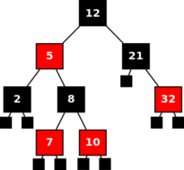
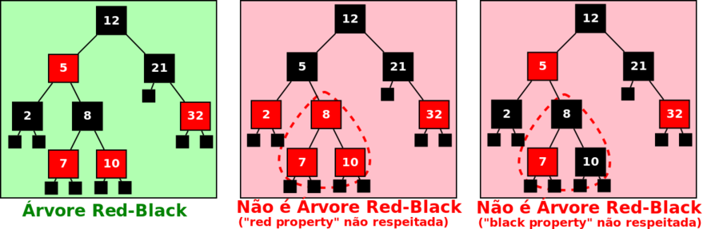

Para efeitos da nota atribuída à resolução de exercícios ao longo do semestre - Submeter até 23:59 de 15 de Maio
(o problema continuará depois disponível para submissão, mas sem contar para a nota)
[para perceber o contexto do problema deve ler o guião da aula #06]
 As árvores red-black são um tipo de árvores binárias de pesquisa "equilibradas" que garantem tempo logarítmico nas operações típicas de pesquisa, inserção e remoção de elementos.
Para que uma árvore binária de nós pretos e vermelhos seja considerada red-black tem que obedecer a várias restrições. Antes de tudo o resto, tem de ser uma árvore binária de pesquisa, ou seja, para qualquer nó da árvore, todos os nós descendentes à sua esquerda têm de ser menores, e todos os nós descendentes à sua direita têm de ser maiores. Para além disso, tem de respeitar as seguintes propriedades:
Dada uma árvore binária constituída unicamente por nós pretos e vermelhos, a tua tarefa é determinar se ela é uma árvore red-black, ou seja, se é árvore binária de pesquisa e se obedece às propriedades descritas.
Na primeira linha do input está um número A indicando a quantidade de árvores a considerar.
Seguem-se A linhas, cada uma com Ni inteiros entre -1000 e 1000 descrevendo descrevendo uma árvore red-black em preorder (raíz, sub-árvore esquerda, sub-árvore direita). Um número positivo indica um nó preto com esse valor. Um número negativo indica um nó vermelho contendo o valor absoluto do número (ex: -5 indica um nó vermelho contendo o número 5). O número zero representa uma folha nula preta.
A título de exemplo, a árvore da figura de cima é descrita por:
12 -5 2 0 0 8 -7 0 0 -10 0 0 21 0 -32 0 0
É garantido que não existem números repetidos na árvore.
O output deve ter exactamente A linhas. Em cada uma delas deve ser imprimido SIM ou NAO consoante a árvore respectiva seja ou não uma red-black tree.
São garantidos os seguintes limites em todos os casos de teste que irão ser colocados ao programa:
| 1 ≤ A ≤ 20 | Número de árvores a considerar | |
| 1 ≤ Ni ≤ 100 | Número de nós de uma árvore |
3 12 -5 2 0 0 8 -7 0 0 -10 0 0 21 0 -32 0 0 12 5 -2 0 0 -8 -7 0 0 -10 0 0 21 0 -32 0 0 12 -5 2 0 0 8 -7 0 0 10 0 0 21 0 -32 0 0
SIM NAO NAO
O exemplo de input corresponde às seguintes 3 árvores:

Desenho e Análise de Algoritmos (CC2001)
DCC/FCUP - Faculdade de Ciências da Universidade do Porto